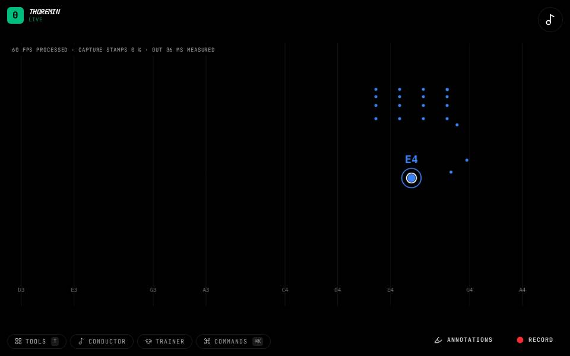

Instruments › Field instruments
Finger Gate

What to do
- Hold a hand up. Touch the index finger to the thumb to make a sound.
- Let go to stop it.
- Curl the middle finger to brighten the tone.
The index finger is a key: touching the thumb opens the sound, letting go closes it.
How it works
The index finger is routed to the gate (on/off) and the middle finger to brightness. Your hand's position still chooses the note.
Its settings: Hand. Every knob: the manual.